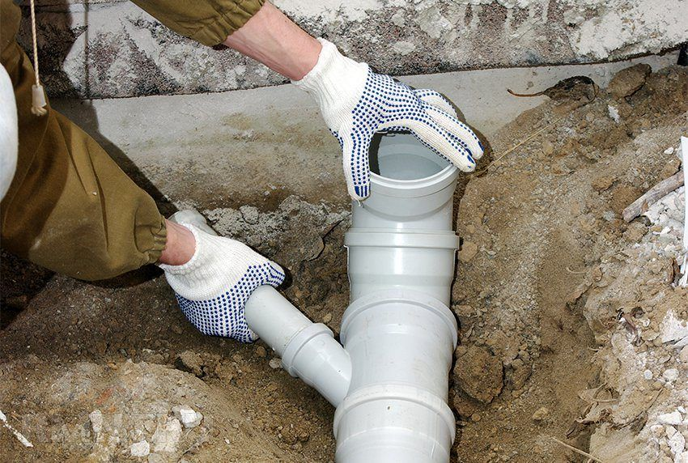

Tualeto dubenų valymas - Panelių Gyvenimas - 2020
2020.10.29 08:29

lt.desertanglican.org
desertanglican Panelių Gyvenimas
Tualeto dubenų valymas
Panelių Gyvenimas 2020
Kai kalbama apie valymo namu, jokio užduoty neišgądinamo tiek, kiek tualeto indų valyma vonioje. Nor tualeto valyma nėra kažka, ko jū kada nor matote kaip įdomu, darba gali būti baigta greičiau ir le
Turinys:
Tualeto indų valymo žingsniai Tualeto indų valymo priemonės Nuvalykite užsispyrėjusius tualetinius žiedus Tualeto dubuo priežiūra
Kai kalbama apie valymo namus, jokios užduotys neišgąsdinamos tiek, kiek tualeto indų valymas vonioje. Nors tualeto valymas nėra kažkas, ko jūs kada nors matote kaip įdomus, darbas gali būti baigtas greičiau ir lengviau, jei artėsite prie jo tinkamu būdu, naudosite teisingus valymo priemonių tipus ir atlikite reguliarų valymo grafiką.
Tualeto indų valymo žingsniai
Išskyrus tuos atvejus, kai tualeto dubenyje yra gilūs ir tamsūs žiedai, valymo tualeto dubenys gali būti greitai ir lengvai. Atlikite šiuos veiksmus, jei norite išvalyti tualetinį indą:
Atidarykite langus ir uždėkite apsaugines gumines arba lateksines pirštines. Pasukite tualeto dangtį ir sėdynę. Užtepkite komercinį arba naminį valymo produktą po tualeto dubens ratlankiu. Išpurškite arba pabarstykite valymo priemonę likusioje dubens dalyje. Leiskite gaminiams sėdėti penkiolika ar penkiolikos minučių arba kaip rekomenduojama produkto etiketėje. Paimkite šveitimo šepetėlį ir nuvalykite tualeto stalo šonus ir apačią, kol jis bus švarus. Išskalaukite produktus ant tualeto.Valydami tualetinį indą, toliau valykite tualetą. Nenaudokite šveitimo šepečio, kurį naudojote dubenyje, kad išvalytumėte likusį tualetą, nes jis gali skleisti bakterijas, esančias dubenyje, prie rankenos ar sėdynės. Išpurkškite bako, rankenos, dangčio ir sėdynės viršų ir šonus. Nuvalykite juos drėgnu skudurėliu, po sauso skudurėlio. Palaukite, kol išvalysite grindų dugną, nes po to, kai šluostė šepečiu ant tualeto, iš grindų gali būti pernešta nešvarumų. Baigti nuvalykite tualeto pagrindą.
Tualeto indų valymo priemonės
DarbaiRinkoje yra keletas produktų, skirtų valyti vonios kambarius ir tualetus. Komerciniai prekės ženklai, kuriuose yra valymo priemonės, kuriose yra tualetinių indų valikliai, yra:
Clorox Lizolis Šveitimo burbuliukai Darbai Comet Mr. CleanKomerciniai cheminiai valikliai ne visada yra saugūs aplinkai. Jei nerimaujate, kad naudojate ekologiškai švarius valiklius, galbūt norėsite pagaminti ir naudoti namų valymo priemonę arba ieškoti tualeto valymo produktų, kuriuos gamina draugiški valytojai.
Nuvalykite užsispyrėjusius tualetinius žiedus
Žmonės dažnai laukia, kol dubuo bus akivaizdžiai nešvarus, prieš sprendžiant bauginamus tualeto valymo darbus. Kai tarp valymo vyksta per daug laiko, žiedai dažnai būna prie tualeto vandens linijos. Šie žiedai yra įvairių nuosėdų, pvz., Rūdžių, kalcio ir kalkių, susidarymas. Jų valymas įprastais komerciniais produktais arba namų valymo priemonėmis gali neveikti užsispyrusių dėmių.
Norėdami pašalinti užsispyrėjusius žiedus, išjunkite vandens srautą. Žiedai negali būti pašalinti, jei dubuo vis dar pilnas vandens. Išjunkite vandenį, ištuštinkite dubenį vieną kartą. Tada užpildykite dubenį virš žiedo linijos su baltu actu arba baliklio ir vandens mišiniu. Chloras yra kita medžiaga, kuri dažnai naudojama sėkmingai. Būtinai atidarykite langus, kad išvengtumėte garų susidarymo ir dėvėkite apsaugines pirštines. Tegul tai sėdi per naktį. Kitą dieną pabandykite žiedą valyti skruberiu.
Jei po nakties mirkymo išlieka užsispyrę tualetiniai žiedai, gali reikėti nuimti žiedus. Tai yra subtilus procesas, nes jis gali subraižyti tualetą. Naudokite nedidelį tiesų skustuvą arba natūralų pemzos akmenį. Atsargiai ir lengvai nuvalykite žiedą, prireikus pridedant daugiau spaudimo. Padarykite nedidelius plotus vienu metu, todėl bet kokie susidarantys įbrėžimai yra nedideli.
Tualeto dubuo priežiūra
Kuo dažniau valomas tualeto stalas, tuo lengviau darbas tampa. Į kasdienį namų valymo tvarkaraštį pridėkite tualeto dubenėlį. Išlaikant tualetinį dubenį, kasdien atliekant greitą purškimą ir šveitimą, iš tualeto ir vonios kambario išnyks dėmes, žiedus ir mikrobus.
Panelių GyvenimasPublikacijos
Geriausi plaukų tiesinimo įtaisai
Nemokami nėrimo modeliai žaislams
Išgyvenusios atostogos dietoje
Bumblebee teminės virtuvės dekoravimo idėjos
Ankstesnis Straipsnis
Panelių Gyvenimas
Strawberry Birthmark
Braškių gimimo ženkla yra hemangiomo rūši. Jo gerybini navika, uformuota, kai kapiliaru pamušuio lątelė, taip pat žinomo kaip kraujagylių audiniai, kaupiai pernelyg. Ji gauna avo pavadinimą dėl avo g ...
Kitas Straipsnis
Panelių Gyvenimas
Apsipirkimas maistui
Ar ieškote būdų, kaip umažinti namų ūkio biudžetą? Jei taip, pažiūrėkite į avo avaitė bakalėjo parduotuvių įpročiu. Me kalbėjomė u Jeanette Pavini, taupymo ekpertu ir „Coupon.com“ attovė patarėju, ka ...
Panelių Gyvenimas
Graikų kaukės
Panelių Gyvenimas
Kaip įdiegti mozaika grindų plyteles
Panelių Gyvenimas
Spausdintinė gyvenamųjų patalpų nuomos sutartis
Panelių Gyvenimas
Gerbti Afrikos Amerikos vyresnio amžiaus piliečius
Panelių Gyvenimas
1 2 3 4Naujausi Pranešimai
Prancūzų verbas Etre
Panelių Gyvenimas
Kaip ilgai deginti gausa žvakių burtai
Panelių Gyvenimas
Lengvas žiemos amatas
Panelių Gyvenimas
Panelių Gyvenimasdesertanglican
Dovanų mokesčio paaiškinimas Patarimai, kaip rasti pigius lėktuvų bilietus Kaip fotografuoti gyvulius Pakelkite viršutinį kavos stalądesertanglican | bg | cs | da | el | es | et | fi | fr | hi | hr | hu | id | it | iw | ko | lv | ms | nl | pl | pt | ru | sk | sl | sr | sv | th | tr | uk | vi
Sitemap
- Dubenys | C&D Style
- Dubenys, dubenėliai | Gerduva.lt
- Kiek tualeto dubenys sveria? - Įranga 2019
- Kaip valyti tualeto dubenį iš akmens
- 11 geriausių tualeto dubenys - Reitingas 2019
- Tualeto dubuo | designremont.club
- Tualeto dubenų valymas - Panelių Gyvenimas - 2020
- Geriausių tualeto dubenių įvertinimas pagal vartotojų ...
- Juodos tualeto dubenys: modernios dizaino tendencijos ...
- 10 geriausių tualeto dubenys Roca - Reitingas 2019
- Dubenys | C&D Style
Geriausių tualeto dubenių įvertinimas pagal vartotojų atsiliepimus. Remontas Ir Nekilnojamasis Turtas May 3, 2018 be tualeto dabar negali padaryti jokios vieną butą.Iš pradžių gali atrodyti, kad šis objektas gali tarnauti amžinai. Bet iš tikrųjų, laikui bėgant tualetas nebeatitinka estetinius reikalavimus.
- Dubenys, dubenėliai | Gerduva.lt
Tualeto dubenys, pagamintos iš dirbtinio ir natūralaus akmens, taip pat stiklo, priklauso prabangos prekėms. Jie turi didelę kainą, tačiau jie turi gražų dizainą ir puikiai tinka interjere Art Nouveau stiliaus. Dirbtinis akmuo ir stiklas yra mažai stiprus, tačiau gaminant tualetinius dubenis šioms medžiagoms pridedami specialūs ...
- Kiek tualeto dubenys sveria? - Įranga 2019
Tualeto indų valymo žingsniai. Išskyrus tuos atvejus, kai tualeto dubenyje yra gilūs ir tamsūs žiedai, valymo tualeto dubenys gali būti greitai ir lengvai. Atlikite šiuos veiksmus, jei norite išvalyti tualetinį indą: Atidarykite langus ir uždėkite apsaugines gumines arba lateksines pirštines. Pasukite tualeto dangtį ir sėdynę.
- Kaip valyti tualeto dubenį iš akmens
Dubenys, dubenėliai Rūšiuoti pagal Pozicija Pavadinimas Kaina Prekės ženklas Rūšiuoti pagal Nustatyti mažėjimo tvarka Rodyti
- 11 geriausių tualeto dubenys - Reitingas 2019
Slapukų naudojimo sąlygos. Naudodamiesi bm.lv svetaine jūs sutinkate su šiomis naudojimo sąlygomis. „TehEksperts Ltd“ imasi visų priemonių, kad užtikrintų maksimalų saugų svetainės naršymą ir apsaugotų kiekvieno vartotojo duomenis.
- Tualeto dubuo | designremont.club
Puodeliai Lėkštės, lėkštutės Dubenys, dubenėliai. Emaliuoti indai Bambukiniai indai Indai serviravimui Indai maistui laikyti Stoveliai virtuvei Indai gėrimams. Stikliniai indai su kraneliu Grafinai, ąsočiai, buteliai Stiklinės, taurės, šiaudeliai. ... Keičiama tualeto šepečio galvutė Metia
- Tualeto dubenų valymas - Panelių Gyvenimas - 2020
Originalaus dizaino dubenys stalo serviravimui. Užeikite į C&D Style internetinę parduotuvę ir įsigykite Jums patinkančius indus.
- Geriausių tualeto dubenių įvertinimas pagal vartotojų ...
Tualeto paaukštinimai mažiausia kaina internetu. Paskubėk, dabar geriausias laikas pirkti...
- Juodos tualeto dubenys: modernios dizaino tendencijos ...
Roca tualetas, kuriam geriau pasirinkti ir pirkti. Pakabinami ir montuojami modeliai „The Gap“, „Dama Senso“, Viktorija, Debba. Geriausi tualetai Roca 2018 - įvertinimas.
- 10 geriausių tualeto dubenys Roca - Reitingas 2019
Juodos tualeto dubenys: modernios dizaino tendencijos Juodasis tualetas ilgai laikomas labai neįprasta tirpalo tualeto interjere, nes jis neatitiko tradicinės santechnikos pasirinkimo sampratos. Tačiau laikui bėgant mados ir įvairių interjero stilių tokia santechnika labai aktualu.
Geriausių tualeto dubenių įvertinimas pagal vartotojų atsiliepimus. Remontas Ir Nekilnojamasis Turtas May 3, 2018 be tualeto dabar negali padaryti jokios vieną butą.Iš pradžių gali atrodyti, kad šis objektas gali tarnauti amžinai. Bet iš tikrųjų, laikui bėgant tualetas nebeatitinka estetinius reikalavimus.
Tualeto dubenys, pagamintos iš dirbtinio ir natūralaus akmens, taip pat stiklo, priklauso prabangos prekėms. Jie turi didelę kainą, tačiau jie turi gražų dizainą ir puikiai tinka interjere Art Nouveau stiliaus. Dirbtinis akmuo ir stiklas yra mažai stiprus, tačiau gaminant tualetinius dubenis šioms medžiagoms pridedami specialūs ...
Tualeto indų valymo žingsniai. Išskyrus tuos atvejus, kai tualeto dubenyje yra gilūs ir tamsūs žiedai, valymo tualeto dubenys gali būti greitai ir lengvai. Atlikite šiuos veiksmus, jei norite išvalyti tualetinį indą: Atidarykite langus ir uždėkite apsaugines gumines arba lateksines pirštines. Pasukite tualeto dangtį ir sėdynę.
Dubenys, dubenėliai Rūšiuoti pagal Pozicija Pavadinimas Kaina Prekės ženklas Rūšiuoti pagal Nustatyti mažėjimo tvarka Rodyti
Slapukų naudojimo sąlygos. Naudodamiesi bm.lv svetaine jūs sutinkate su šiomis naudojimo sąlygomis. „TehEksperts Ltd“ imasi visų priemonių, kad užtikrintų maksimalų saugų svetainės naršymą ir apsaugotų kiekvieno vartotojo duomenis.
Puodeliai Lėkštės, lėkštutės Dubenys, dubenėliai. Emaliuoti indai Bambukiniai indai Indai serviravimui Indai maistui laikyti Stoveliai virtuvei Indai gėrimams. Stikliniai indai su kraneliu Grafinai, ąsočiai, buteliai Stiklinės, taurės, šiaudeliai. ... Keičiama tualeto šepečio galvutė Metia
Originalaus dizaino dubenys stalo serviravimui. Užeikite į C&D Style internetinę parduotuvę ir įsigykite Jums patinkančius indus.
Tualeto paaukštinimai mažiausia kaina internetu. Paskubėk, dabar geriausias laikas pirkti...
Roca tualetas, kuriam geriau pasirinkti ir pirkti. Pakabinami ir montuojami modeliai „The Gap“, „Dama Senso“, Viktorija, Debba. Geriausi tualetai Roca 2018 - įvertinimas.
Juodos tualeto dubenys: modernios dizaino tendencijos Juodasis tualetas ilgai laikomas labai neįprasta tirpalo tualeto interjere, nes jis neatitiko tradicinės santechnikos pasirinkimo sampratos. Tačiau laikui bėgant mados ir įvairių interjero stilių tokia santechnika labai aktualu.
